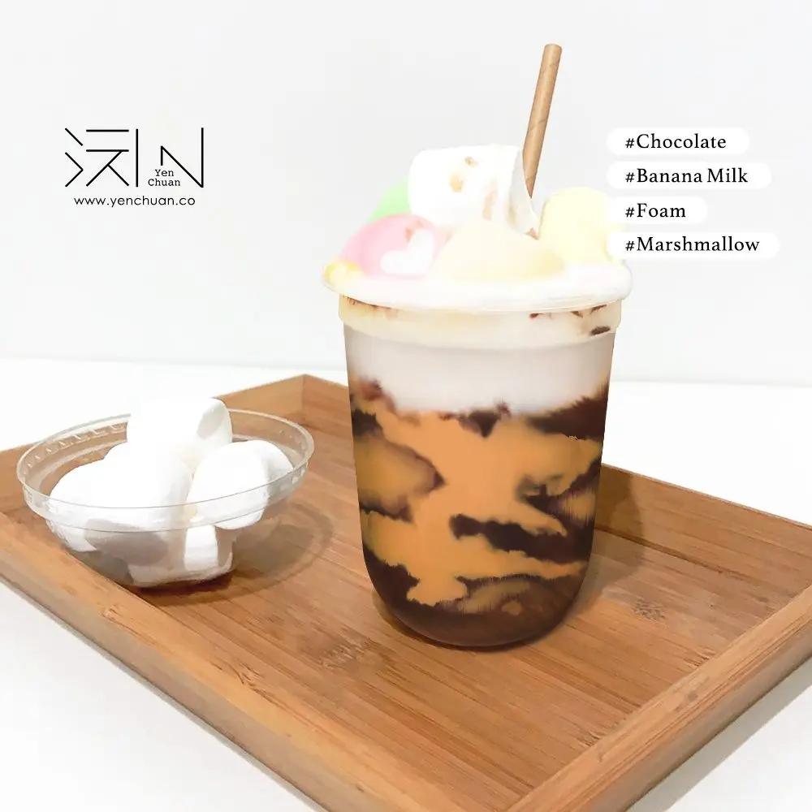
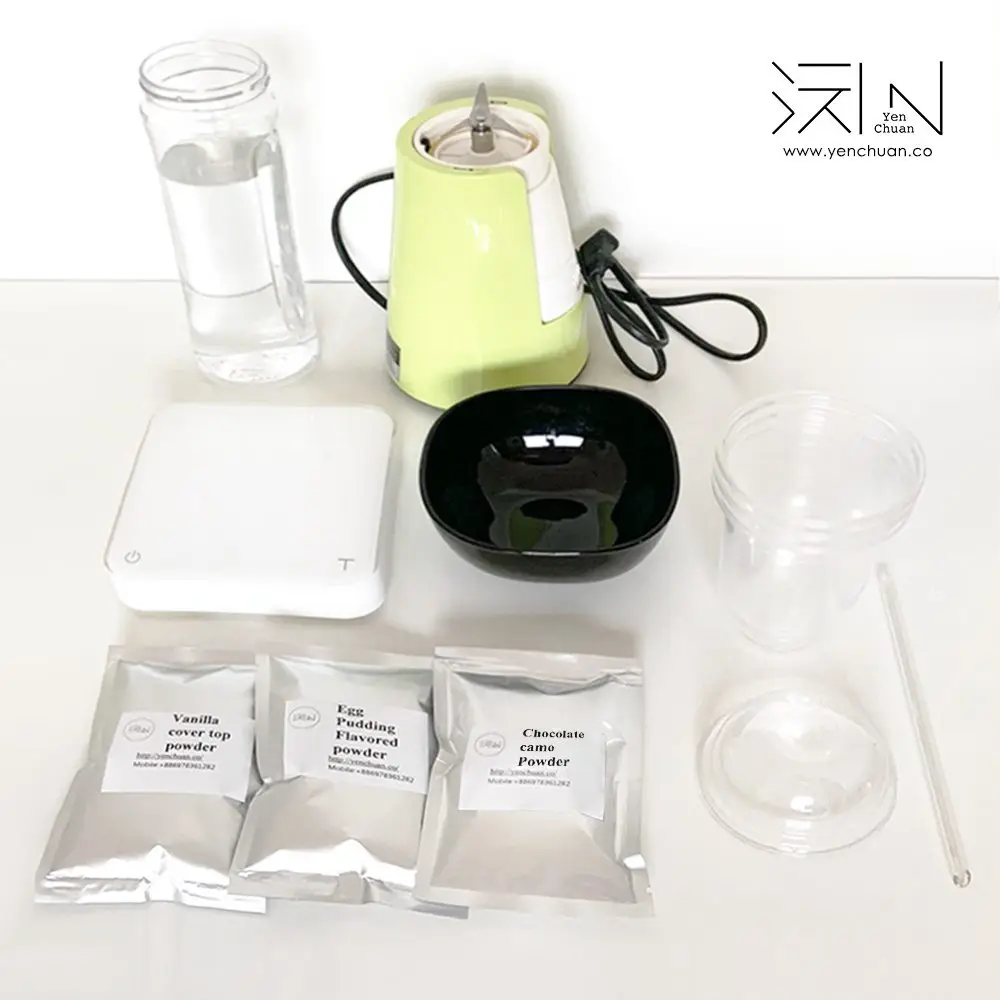
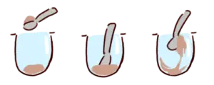
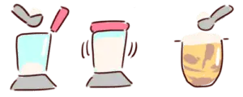

文章 / 飲品配方與資訊
Pretty up your cups with Camo powder!
這篇是英文原文，尚未完成繁體中文翻譯。中文選單與相關商品連結不會切回英文介面。

查看英文原文（尚未翻譯）
Getting bored of Tiger Dot?
A twist of this classic pattern, the Camo powder is another popular way to decorate your bubble tea!
What is Camo Powder?
Check out any popular bubble tea shop in China and you’ll soon come across “Dirty cups” – the latest fad in bubble tea. Don’t let the name fool you, these are bubble tea decorated with delicious Camo powder!
Camo powder made it big during the “Dirty buns” fad in Taiwan, where you see people lining up in droves for a taste of these sweet buns dusted generously with chocolate powder.
Now this powder works its magic with bubble tea – blessing drinks with colourful “Camouflage” patterns and a wide range of delicious flavours.
How does this all work? It’s simple – follow our instructions and you will have a masterpiece in no time!
Egg pudding milk tea with Chocolate Camo and Cream top
Ingredients

Instructions
Part A. Preparing camo pattern

- Add 20g camo powder to cup
- Mix with 40ml water
- Spread paste inside cup to create the “camouflage” pattern
Part B. Preparing egg pudding milk
- Add 300ml water to cup
- Mix with 100g egg pudding milk powder
- Pour mixture into cup from part A, add ice cubes
Part C. Preparing cream top

- Add cover top powder to water in a blender
- Blend until thick and creamy
- Pour onto cup
Now add your favourite toppings – marshmallows, fruit, tapioca pearls…anything you like!
And voila, a picture-perfect cup of bubble tea!
Simple, isn’t it? Mix and match with our wide variety of flavours to find the right cup for you!